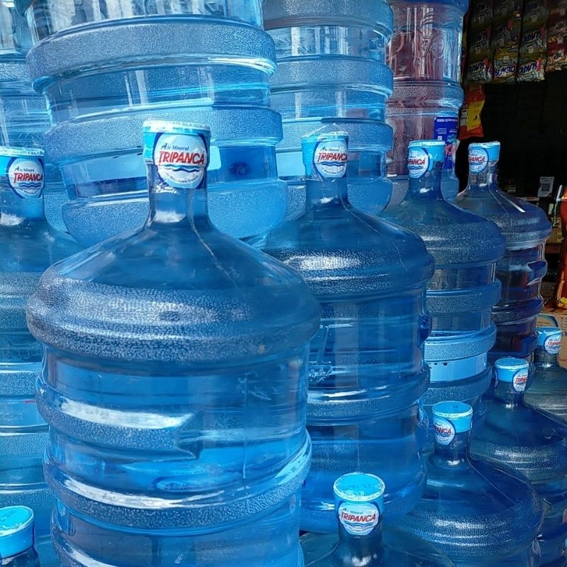

AIRES MINERAL didirikan pada 28 Mei 2023 dengan tujuan menyediakan air
minum yang sehat, berkualitas, dan terjangkau untuk masyarakat. Berawal dari komitmen
memenuhi kebutuhan sehari-hari dengan pelayanan yang cepat dan ramah, kami terus
berkembang hingga kini melayani berbagai kalangan, mulai dari rumah tangga, mahasiswa,
penghuni kos dan kontrakan, pelaku usaha, hingga perkantoran.
Visi & Misi
Visi
Menjadi depot air minum isi ulang yang terpercaya dan pilihan utama
masyarakat Bandar Lampung dengan mengutamakan kualitas, kebersihan, dan pelayanan terbaik.
Misi
Menyediakan air minum yang bersih, sehat, dan aman untuk dikonsumsi.
Menjaga higienitas dalam setiap proses pengolahan air.
Memberikan pelayanan yang cepat, ramah, dan profesional kepada pelanggan.
Menawarkan harga yang terjangkau bagi semua kalangan masyarakat.
Membangun hubungan jangka panjang yang baik dengan pelanggan dan mitra usaha.
Keunggulan & Jam Operasional
Keunggulan Kami
Air segar dengan kualitas terjamin
Proses pengolahan yang higienis dan terstandarisasi
Harga kompetitif dan terjangkau
Pelayanan cepat dan ramah
Tersedia layanan antar langsung ke lokasi Anda
Diskon spesial untuk pelanggan setia
Jam Operasional
Senin – Minggu
Pukul 07.00 – 21.00 WIB
Produk & Harga
Klik gambar untuk memperbesar. Foto produk akan ditampilkan pada masing-masing kartu di bawah ini.
Isi Ulang Galon
Datang Langsung ke Depot
Layanan Isi Ulang – Datang ke Depot
Harga: Rp 4.000 / galon
Diantar – Area Kampung Baru
Layanan Antar – Area Kampung Baru
Harga: Rp 6.000 / galon
Diantar – Luar Kampung Baru
Layanan Antar – Luar Kampung Baru
Harga: Rp 7.000 / galon
Catatan: Jasa antar naik lantai dikenakan biaya tambahan
+Rp 1.000 per lantai.
Galon Asli / Original (Air + Galon)
Galon Aqua Asli/Ori
Galon Aqua Asli – Air sudah termasuk
Harga: Rp 24.000
Galon Grand Asli/Ori
Galon Grand Asli – Air sudah termasuk
Harga: Rp 19.000
Galon Trivanca Asli/Ori

Galon Trivanca Asli – Air sudah termasuk
Harga: Rp 18.000
Beli Galon Baru
Galon baru berbagai merek & galon berkeran tersedia
Harga: Rp 37.000 – Rp 43.000 (berbagai merek & galon keran)
Ulasan Pelanggan
Berikut adalah ulasan jujur dari pelanggan kami.
Rara
"Galonnya bersih, agak mahal klo di anterin ga sesuai harganya di bener sama pas
bayar harusnya 6rb tapi di suruh bayar 7rb"
Kia
"Agak susah karna masih pake grub wa, jadinya klo pesen kadang ketumbur sama chet
yg lainnya jadi kadang ga di anter"
Pemesanan & Kontak
Lokasi Depot
Jalan M. Said, Belakang Gedung Teknik Universitas Lampung (Unila)
Gang M. Said, Kampung Baru, Bandar Lampung